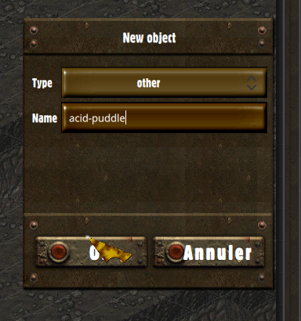

Level design
1. Tilemaps
Designing level starts with Tiled, building tilemaps, and ends in the Game editor, adding interactive objects and NPCs. In this chapter, we will go over how to build tilemaps suitable for our game engine.
Download and install Tiled, if you haven't already done so, and let's get started:
1.1 Creating a new tilemap
Go to File -> New -> New map to open the new tilemap dialog:

The tile size must be 72x36, orientation must be isometric, and tile order should be left-down.
Click the "Save as", and save your tilemap in assets/tilemaps as stable-cavern.json.
We will now import a tileset to paint our tilemap. Click the "Open" button:

Go to the assets/tilesets folder and open the three following files:
- tileset-1.json, a tileset for ground and roof tiles.
- walls-1.json, a tileset for walls.
- zones.json, a tileset of semi-transparent tiles for tile zones.
One last thing before you can start painting your tilemap: rename the tile layer to ground.

Everything's ready to go, you can start painting the ground layer of your tilemap. The result might end up a bit like this:

One important thing to know is that the ground and roof layers from your tilemaps get pre-rendered and cached in the .prerender folder. If you want to update those layers, don't forget to remove that folder, which will force the game engine to render your tilemap again, with your changes included.
1.2 Blocks
Now that we know how to paint the ground, let's move on to the blocks. Blocks are bigger tiles of 72x108 pixels, which block the path and line of sight of characters. We will need to create a new layer of tiles, called blocks:

You can pick blocks from the blocks.json tileset we opened earlier, and start painting your blocks now.
1.3 Walls
Walls have the same function as blocks, but instead of blocking a whole tile, they merely block the path on a tile's border, horizontally or vertically.
To handle rendering order and direction of walls, we will make a single layer for each orientation of wall (north, east, south, west). These layers will be part of a layer group that must be called `walls`.

Here's a representation of which walls should belong to which layer when drawing a room:

1.4 Doorways
Doorways are special tiles from the `blocks` or `walls` layers which don't block the characters movement. They are typically used as frame for door objects, although those aren't created within Tiled, but within the Game Editor.
To differentiate doorways from regular walls, we use Tiled "custom properties". Try opening the `junk-walls.json` tileset, and check out the custom properties on a doorway tile:

In the corresponding custom properties, we added a custom property of boolean type called `doorway`, and set the value to true.
1.5 Cover
Walls and blocks break line of sights from characters, but you might not always want those to. You wall might feature a window, for instance, or your block might just be a short obstacle, providing cover. In those case, similarly to doorways, you must set a custom property on the corresponding tile, as such:

The cover property is of `int` type, and won't block line of sights as soon as the value is above zero.
The cover value will also be used to lower the chances of success of any attack that would go through the tile. It will also decrease the chances of detecting a character that's sneaking. The higher the value, the harder it will be for someone to aim or see through the tile.
When a line of sight crosses several tiles which have a cover value, the highest cover value will be used to determine the chances of success of the attack.
Cover values are ignored on cases adjacent to the attacker's.
1.6 Roofs
We'll now put roofs over those walls. Roofs are stored in multiple layers: that is because when the player character is under a roof tile, the whole layer disappears, while the other roof layers remain visible.
The first step is to create a layer group named roofs. In this folder, you can then add any number of tile layer, named however you want:

Roof layers also have another particularity: they are rendered at a diffrent offset than other layers. The roof group layer must have its "Vertical offset" property set to -72:

You may now start painting your roof layers. tileset-1 includes some roof tiles you can use at your leisure.
1.7 Zones
The last thing you will have to do in Tiled will be drawing tile zone. Tile zones can serve the following purposes:
- Entry zones can be used to insert a party of characters. It is mostly used when the map is entered by the player, to insert him along with his party.
- Exit zones can be used by the player character to exit a map. These zones can redirect either to another map or to the worldmap.
- Other zones can be used by scripts, to get a list of the objects in a zone (characters included), or to monitor what enters or exits the zone.
Note that exit zones are the only ones visible to the player. The tiles used when rendering the exit zones depend on whether the exit zone will send the player to another tilemap, or to the worldmap: it does not matter which kind of tile you use in Tiled to define your zone.
Let us create an exit and an entry zone for our tilemap. Like roofs, zones are grouped in a layer group: create the zones layer group, and add two new tile layers, called exit-zone and demo-begin:

We will start by creating the entry zone. We will have to set some custom property on our zone's tile layer, before drawing the zone, as shown in the following video:
We first created the type property, which will indicate the game engine our zone type. Authorized values are entry, exit, or an empty string.
As we are creating an entry-zone, we can also set the default property: when no entry zone name is explicitely found, or none match the zone name provided, characters will be inserted in this zone instead. As such, it is also the zone in which the player arrives when coming from the worldmap.
Creating our exit zone is very similar, but we may provide other custom properties:
- target can be set to the name of the tilemap you wish to redirect to.
- toZone should be set to the name of the entry zone you wish the player to be redirected to.
If both target and toZone are left empty, the exit zone will send the player to the worldmap.
If only target is empty, the exit zone will look for an entry zone corresponding to toZone in the current tilemap.
1.8 Light zones
There is also one last special type of zone: light zones are used to draw light effects on the tilemap, while allowing bonuses for perception related tests on objects affected by a light zone. Light zones can also be turned on and off by scripts.
Light zones are located in the lights layer group. Create a new tile layer as such:

Open the tileset located at assets/tilesets/lights.json, and you can now start drawing light zones:
It is also possible to give a tint to your light by using adding the color custom property to the light layer, such as:
Don't forget to set the alpha channel on the color property to define the strength of the tint. An opaque color would result in a entirely plain coloured layer.
1.9 Floors
Your tilemap may also include several floors. The floors are grouped within a layer group, and each o them can include the same layers we've introduced earlier: ground, roofs, walls, blocks, lights and zones. The result looks like this:
Note that the floors are sorted from upper to lower.
You must also set a vertical offset to each floor folder.
Within the game, each floor will render all their upper floors as if they were a roof layer.
2. Level editor
2.1 Adding a game object
Download the game editor, launch the game, and click "Game Editor" on the main menu. You will be greeted by the Worldmap editor. But we'll first get into the level editor, by clicking on the "Levels" tab on the top of the screen.
On the left side of the screen, you will see a list of the tilemaps stored in assets/tilemaps. Click on "stable-cavern" to load it in the level editor.
The game object manager appears on the right side of the screen:
Click on the + button to add open the following dialog:
Our first Game Object will be a puddle of acid. We will use this example to learn how to position objects, before introducing how scripting game objects works.
Select the Other object type, and call it "acid-puddle".
2.2 Game object
Game Objects are the objects populating the world: characters, doors, items, and anything that the player can interact with. All of them can be controlled by a script, and they all share a set of tools to help you program their behaviour:
| Sprite | The visual representation of a game object on the tilemap. |
| Script | Scripts are attached to their game objects, and can be interacted with by other scripts. |
| Detectability | By default, objects are visible. But they can be hidden, and revealed through script or detection. |
| DataStore | Persistent data are written in DataStore, as seen in scripting 1.4. |
| ControlZone | Objects can optionally feature a control zone, defined in the Game Editor. Control zones can signal the script when characters enter the zone. They can also block or release access to the zone. |
| TaskManager | Allows you to schedule calls to your scripts. It is based on game-time, rather than real-time. The game and level global objects also feature a TaskManager, and we've experimented with it in section 1.4 and 2.6. |
In our journey to discover game objects, we will start with the simplest of them all: we call it the DynamicObject, and it serves as a basis for all interactive objects.
2.3 Sprite and positionning
We need to create a Sprite for our object to be displayed in a level. We will use the following picture to represent our puddle:

Download this file to your assets/sprites folder. Then, open up the Game Editor, go to the Sprite tab, and create our new sprite as following:
Sprites are organized in groups. Objects usually use sprites from a single group. Here, we created a sprite group named acid-puddle, and added the normal animation to it.
Now that our sprite has been created, let's go back to the Level editor, and select our "acid-puddle" object in the right-sided panel. This will display the game object view with which we can edit the properties and access the resources bound to a game object.
Using this view, we will set a position on the map, and select the sprite we created. See the following video for reference:
Our acid puddle is now rendered in the level. But it's not exactly properly positionned. Characters are going to walk on that puddle, and we want it to be properly rendered below the characters, and not above.
For these kind of situations, we will use the Floating positionning mode, as opposed to the Tile-based one. A tile position will still be required, as it is necessary to determine render order. But we will set the position manually, as following:
Since the rendering order starts with objects from the top and right positions, you should ensure the tile position of your floating objects is set to the upper right tile overlapped by your object.
We also uncheck the Blocks path checkbox, because we want characters to be able to move over the object.
And lastly, we set the Cover value to zero, because we want characters to see through the object. An object with a cover value of 100 cannot be seen through.
The cover value is applied on an object's case. When the objects contains a ControlZone with the Blocks path property enabled, the cover value is extended to all the tiles included in the zone.
2.4 Scripts
In the following steps, our Game Object will need to implement scripted behaviours. Create a script and bind it to your game object as shown below:
The acid-puddle.mjs file has been created in the scripts/behaviours folder. You can open using your system's default application for JavaScript, by clicking on the button at the right of the script picker.
The generated file already contains the skeleton for any script, which looks like this:
class AcidPuddle {
constructor(model) {
this.model = model;
}
}
export function create(model) {
return new AcidPuddle(model);
}Within the constructor, we set this.model on our script object. This will allow us to interact with the game object that our script will manage.
2.5 Control zones
We will need a way for it to know when characters are moving around in it. To that end, we will need two things: a script, which we have prepared earlier, and a control zone.
Let's configure our control zone first. Create a control zone for the puddle, like this:
The first thing we did here was unchecking the Blocks path checkbox: by default, control zones block access to the zone cases. But we want characters to walk on our puddle, so our zone must be accessible.
Then, we toggled the zone edit mode: when the zone edit mode is enabled, clicking on tiles will add them to the control zone.
Alright: now that our control zone is ready, let's see how to leverage it using scripts to inflict damage on characters as they enter or exit the zone. To achieve that, our script object can implement the hooks onZoneEntered and onZoneExited, like this:
class AcidPuddle {
constructor(model) {
this.model = model;
}
onZoneEntered(character) {
this.inflictBurn(character);
}
onZoneExited(character) {
this.inflictBurn(character);
}
inflictBurn(character) {
if (character == game.player)
game.appendToConsole("The acid is slowly disolving you !");
character.takeDamage(10);
}
}
export function create(model) {
return new AcidPuddle(model);
}With that example, we know how to make our object react to characters entering or leaving its control zone. But what if we want to inflict damage over time to the characters that are already within the zone ?
We will update our acid puddle script to inflict damage to the residents of its control zone over time. For that, we will use the getControlZoneOccupants method from our game object, conjointly with its Task Manager:
class AcidPuddle {
constructor(model) {
this.model = model;
}
// The initialize hook only gets called the first time the script object is instanciated
// for this specific game object
initialize() {
this.model.tasks.addTask("inflictBurn", 3500, 0);
}
inflictBurn() {
const occupants = this.model.getControlZoneOccupants();
const characters = occupants.filter(object => object.getObjectType() == "Character");
characters.forEach(character => character.takeDamage(10, null));
}
}
export function create(model) {
return new AcidPuddle(model);
}-
We use this.model.tasks.addTask to schedule a call to a method in the game object's script. The parameters are respectively: the name of the script method to call, the time interval expressed in milliseconds, and how much time will the cycle repeat. If that last number is zero, the task repeats indefinitely.
In this example, we scheduled a call to inflictBurn every 3.5 seconds. -
The getControlZoneOccupants method returns a list of all the objects in a zone: but we only care about characters, which is why we filtered out the non-character objects using getObjectType.
Then, we iterate over each character and inflict damage to them by calling takeDamage. - takeDamage takes two parameters: the first one for the amount of damage inflicted, while the second one is meant to indicate which other character inflicted the damage. When damage hasn't been inflicted by any character in particular, you can just pass null instead.
Note that a control zone position is relative to its owner object. This allows you to implement interesting behaviours when attaching a control zone to a character.
2.6 Detectability
Sometimes, objects should be concealed to the player. Concealed objects can be revealed through script, or through detection by the player. Detection is based on the player's Perception and the distance between the player and the object.
If we edit the initialize method of our script as below, we will make our object invisible to the player until we manually reveal it later. We do this by setting the this.model.hidden property:
initialize() {
this.model.hidden = true;
this.model.tasks.addTask("inflictBurn", 3500, 0);
}
What if we want to enable detectability for the player ? To do that, we'll use sneaking, as following:
initialize() {
this.model.toggleSneaking(true);
this.model.interruptOnDetection = true;
this.model.tasks.addTask("inflictBurn", 3500, 0);
}
onDetected() {
game.appendToConsole("You detected a puddle of acid");
}
Note that we also set interruptOnDetection to true: this will cause the detection to interrupt whatever the player is currently doing. It is useful to prevent the player from trigerring a trap that he just detected.
We also added the onDetected method, which is called whenever concealed objects are detected.
Well then ! We've worked hard on that puddle of acid. Let's see it in action:
2.7 Object groups
Object groups are a special kind of game objects. They have two main uses:
- They can contain game objects, as well as other object groups, allowing you to organize your game objects in a tree.
- Much like game objects, they can also include a script, a control zone and a task manager. This is useful when you need an object to manage a bunch of other objects, or when you need to add scripted behaviours that aren't bound to a game object.
To add an object group, click on the following button in the game object manager:
Object groups appear on top of the game object list. Click on your new group to open the group view:
2.8 Copy/Paste
In the game object manager views, there's a set of buttons visible on the top-right corner.
When opening a game object or an object group, you should see the Copy button appear right on the left of the trashbin button.
You can use the Copy button on any object group or game object to save it in the clipper. When something is in the clipper, the Paste button will appear on group views. Click on the paste button to duplicate the object as many time as needed.